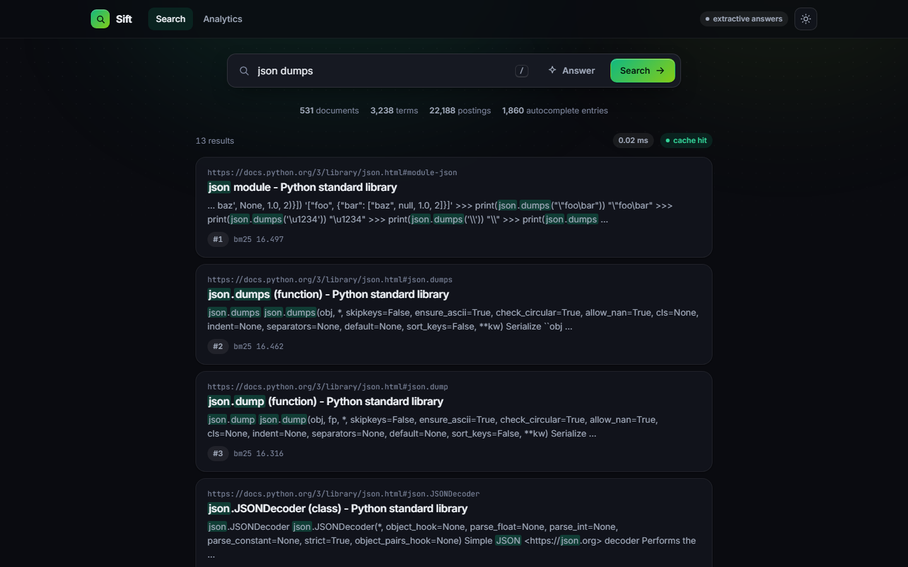

Crawler, BM25 ranking and autocomplete, no search libraries
crawl robots.txt + rate limit → 531 docs index 22,188 postings → built in 75 ms search "json dumps" BM25 → p50 2.4 ms suggest trie "js" → 11.6 µs cache LRU → 76% hit rate 57 tests, 91% coverage
